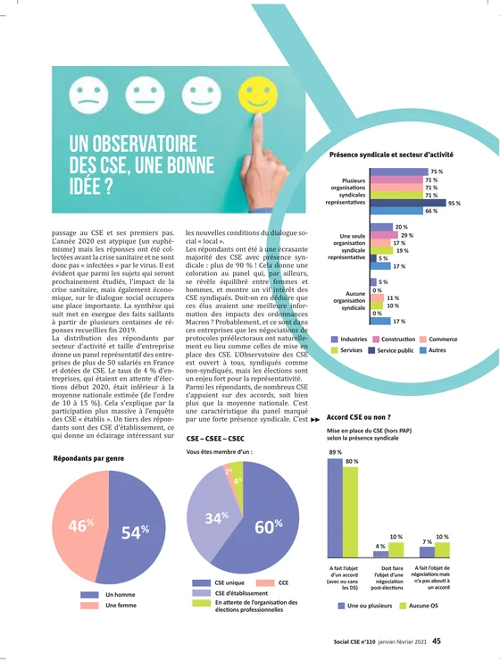
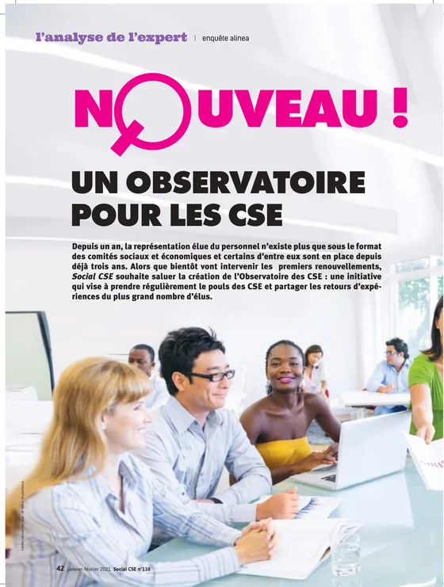
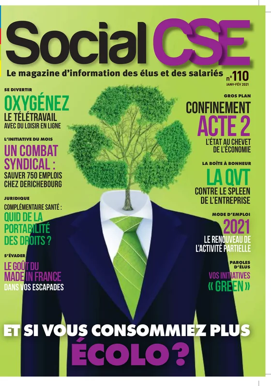

Résultats et études
Se comparer et profiter des retours d’expérience.
La collecte, l’analyse et la publication des résultats de nos études permettent à tous les acteurs concernés de se comparer.
Les études
Ce que l’Observatoire a mesuré, et ce qui arrive.
Le passage au CSE
Réponses recueillies fin 2019, publiées en janvier 2021 dans Social CSE.
Enquête nationale RPS 2026 · En coursRisques psychosociaux des représentants du personnel
Restitution les 10 et 11 mars 2027 au Stade de France.
Autres enquêtes de l’Observatoire
Titres, dates et résultats à fournir : la page actuelle du site ne contient pas encore ces contenus.
Étude n° 1 · le passage au CSE
Avec présence syndicale, 68 % des élus ne voient pas le dialogue s’ouvrir.
« Le dialogue social est-il devenu plus ouvert ? »
Depuis le passage de votre CE en CSE, considérez-vous que le dialogue social est devenu plus ouvert ?
Répondants inclus = 100 %. Source : Observatoire des CSE, 1re étude, Social CSE n° 110.
Part des élus qui répondent non, selon la population choisie.
Mise en place du CSE
Hors protocole préélectoral.
Ce que le passage au CSE a changé
Les points négatifs devancent les points positifs.
Analyse publiée dans Social CSE n° 110. Le propos est plus nuancé en l’absence de présence syndicale. Pour chaque proposition, la part des réponses selon la présence syndicale ; survolez ou sélectionnez une ligne pour lire les valeurs.
- Une ou plusieurs organisations syndicales
- Aucune organisation syndicale
Répondants inclus = 100 % par population. Source : Observatoire des CSE, 1re étude, Social CSE n° 110.
Nombre de réunions
Évolution depuis le passage au CSE, selon le type d’instance.
Répondants inclus = 100 %. Source : 1re étude.
Présence syndicale
Répartition des répondants selon le secteur d’activité.
Répondants inclus = 100 %. Source : 1re étude.
Le point de vue d’une participante
« La performance d’une entreprise se mesure aussi à la qualité de ses relations sociales »
Après mars 2027
À quoi ressembleront les résultats RPS 2026.
Exemple de tableau de bord. Les chiffres sont fictifs, les axes sont des exemples à remplacer par les dimensions du questionnaire.
D’une édition à l’autre · fictif
Le socle d’items stable permettra de comparer les éditions année après année.



La presse en parle
« Nouveau ! Un observatoire pour les CSE »
Dans son numéro 110 de janvier-février 2021, Social CSE a salué la création de l’Observatoire, présenté la synthèse de la 1re étude avec l’analyse de Ronan Darchen, et recueilli le point de vue d’Odile, déléguée syndicale.
Recevoir les résultats
Recevez les résultats de nos études.
Merci, c’est noté.
Dans la version en ligne, vous recevriez les prochains résultats à cette adresse. Ici, rien n’a été envoyé.